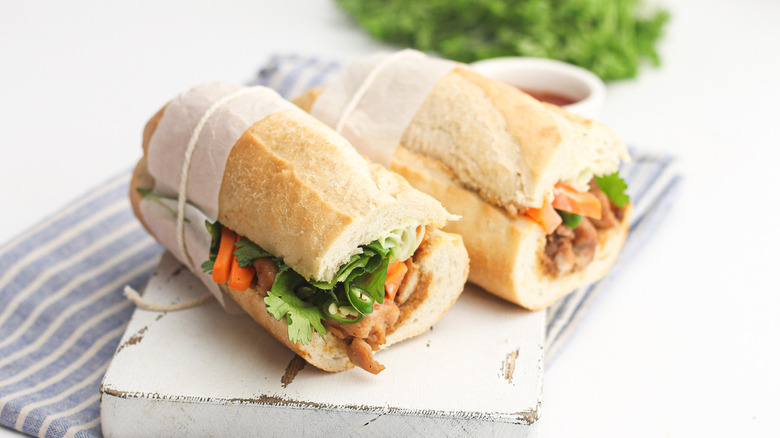

Banh Mi

Description
This delicious sandwich treat is easy to make in less than five minutes, as well as tasty!
Ingredients
- 2 cloves garlic
- 1 carrot
- 1 small cucumber
- one half cup cilantro
- 2 green chili peppers
- one eighth cup rice wine vinegar
- 1 tablespoon salt
- 1 cup hot water
- 12 ounces boneless skinless chicken thighs
- 1 tablespoon honey
- 1 tablespoon hoisin sauce
- 1 tablespoon soy sauce
- 1 footlong baguette
- 3 table spoons mayonaisse
Directions
- Mine the garlic
- Peel the carrot and chop it into matchstick pieces
- Peel and slice the cucumber into ribbons
- Slice the green chillies and pick the cilantro leaves off stems
- Mix the sugar, rice wine vinegar, and salt with the hot water until it dissolves
- Pour the mixture over the Carrots and let it sit to pickle over 1 hour
- Chop the chicken meat into bite size pieces and place them in a bowl
- Pour everything over the chicken
- Heat a frying pan over medium-high and saute the marinated chicken until cooked. About 10 minutes.
- Slice open the baguette and scoop out some of the soft bread inside to create more room for the sandwich fillings.
- Place the cooked chicken inside the bread followed by carrots, cucumbers, cilantro, and chili peppers
- Slice the banh mi in half to make two servings and enjoy!